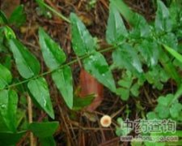

扭肚藤

拼音
Niǔ Dù Ténɡ
别名
白花茶、假素馨、猪肚勒、青藤子花
来源
木犀科茉莉花属植物扭肚藤Jasminum amplexicaule Buch.-Ham.，以茎、叶入药。全年可采，洗净切段，晒干。
生境分布
野生，常攀援于灌木丛中。分布我国南部。产于广东等地。
药材特点
藤状灌木，高2～4米。小枝微有毛。单叶对生；卵状披针形，长3～7厘米，宽1.5～3厘米，先端短尖或钝尖，基部浑圆、截头状或稍心形，被微毛或近秃净或沿背脉上有柔毛，具短柄。聚伞花序稠密，常生于侧枝之顶，多少被柔毛；花柄极短，长2～3毫米，被疏毛或近秃净；萼被毛，裂片线形，长5～10毫米；花冠白色，芳香，高脚碟状，管长约2～3厘米，裂片矩圆形，长6～10毫米；雄蕊2，内藏；子房上位，2室。果球形，直径约4毫米。花期7月。
性状
干燥茎圆柱形，多截成长约3～5厘米的段落，粗约1～5毫米；幼枝茶褐色被疏毛，或近光滑，节部稍膨大。质坚，断面粗糙，木部白色，中央具明显的髓部或形成空洞。叶茶褐色，对生，卵状披针形，全缘，质薄而脆，易碎。以叶多、茶褐色、枝少者为佳。
性味
微苦，凉。
功能主治
清热解毒，利湿消滞。用于急性胃肠炎，痢疾，消化不良，急性结膜炎，急性扁桃体炎。
用法用量
0.5～1两。
化学成分
茎叶中含有扭体藤甙（jasamplexoside）A、B、C，10-羟基-女贞甙（10－hydroxyligustroside）和素馨属甙（jasmi－noside）等断环烯醚甙成类化合物[1]。
药理作用
1：无药理作用数据
摘录
《全国中草药汇编》